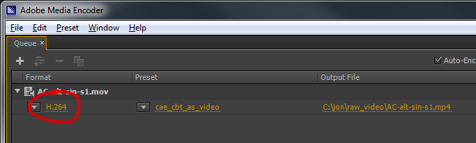
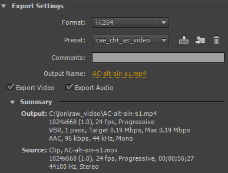
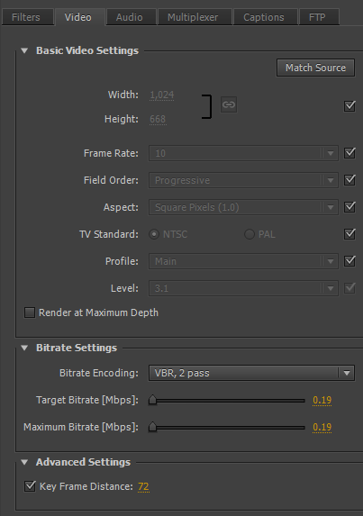
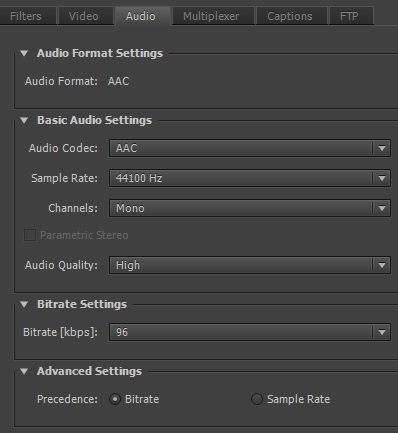
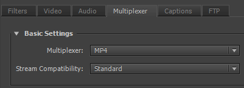
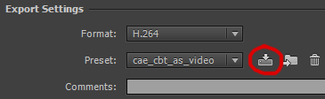

Media Encoder Settings
You'll need to create a Media Encoder profile to create mp4 files. To do this:
Step 1: Click on H264 to Open Settings

Step 2: Enter values for Video, Audio and Mulitplexer
You'll need to make sure you have the following settings - many of these will be the default values anyway:
   Step 3: Save Preset
Click Save Preset and save as 'cae_cbt_as_video'
